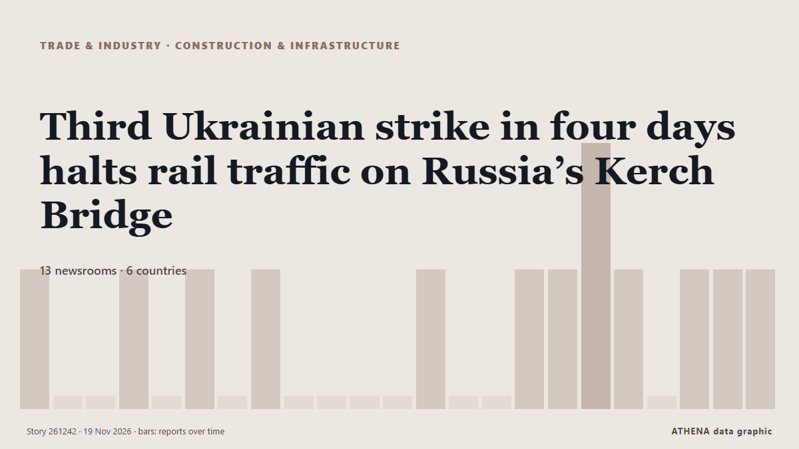

Εμπόριο, Βιομηχανία & Υποδομές
ΧορηγούμενοΠαρουσιάζεται από  Cybernetics and Artificial Intelligence Lab Welcome to the Cybernetics and Artificial Intelligence Laboratory, established at the Department of Business Administration of the National and Kapodistrian University of Athens. The lab is headed by Professor Dimitrios Thomakos. The lab aims to do research that can be published in top venues. Our research uses tools and methods of Artificial Intelligence, and lies in the following areas: - Forecasting - Decision making - Cyber security - Finance We are always looking forward to collaborating with exceptional students!
Cybernetics and Artificial Intelligence Lab Welcome to the Cybernetics and Artificial Intelligence Laboratory, established at the Department of Business Administration of the National and Kapodistrian University of Athens. The lab is headed by Professor Dimitrios Thomakos. The lab aims to do research that can be published in top venues. Our research uses tools and methods of Artificial Intelligence, and lies in the following areas: - Forecasting - Decision making - Cyber security - Finance We are always looking forward to collaborating with exceptional students!
Οι τίτλοι των ειδήσεων παρουσιάζονται στα αγγλικά, όπως δημοσιεύτηκαν.

Κατασκευές & υποδομέςThird Ukrainian strike in four days halts rail traffic on Russia’s Kerch Bridge
The Kerch Bridge is a key artery for military and civilian supplies to Crimea, which Moscow seized in defiance of international law in 2014. από The Irish News (Belfast)
| 6 Νοε | 75 |
|---|---|
| 7 Νοε | 44 |
| 8 Νοε | 49 |
| 9 Νοε | 118 |
| 10 Νοε | 145 |
| 11 Νοε | 109 |
| 12 Νοε | 94 |
| 13 Νοε | 84 |
| 14 Νοε | 78 |
| 15 Νοε | 64 |
| 16 Νοε | 119 |
| 17 Νοε | 94 |
| 18 Νοε | 74 |
| 19 Νοε | 30 |
Crimean Bridge attacked again, Russia says
The Crimean Bridge has been attacked by Ukraine for the third time this week, Russia has said. από MyJoyOnline
Canada, India close to finalizing free trade deal, envoy says
Defence agreement likely to be signed during Modi’s trip to Ottawa in December, says Indian high commissioner to Canada. από The Globe and Mail
US tightens Iran blockade with curbs on oil transfers at sea, advisory shows
London: The US military will treat ships that receive cargo at sea from vessels loaded in Iran as attempting to evade its blockade of Iranian ports and could take action against them, according to an… από Deccan Herald
Strike Risk Grows at Busiest US Ports as Contract Talks Stall
Contract negotiations between security workers at the Ports of Los Angeles and Long Beach and their employers have stalled, setting up a “real potential” for a strike starting on Saturday that could… από Insurance Journal
See How Much Companies Are Getting in Tariff Refunds
Some firms are directing refunds to corporate leadership instead of reimbursing consumers, ProPublica finds Several companies that received refunds for paying Donald Trump’s tariffs have put those… από Guardian Business
Hanoi shuts streets around central lake for 6 days for Vietnam's first Culture Day
Hanoi police are closing streets around Hoan Kiem Lake to traffic from Wednesday until Monday next week for the opening of Vietnam Culture Day celebrations. από VnExpress International
Thailand seeks lower US tariffs on forced labour and excess capacity
Thailand is seeking to reduce additional US tariffs on Thai goods from 12.5% to 10% under measures related to forced labour, while pushing for the lowest possible tariffs under proposed US measures… από Khaosod English
ITF joins ISF Verify to help scale trusted digital seafarer certification worldwide
The International Transport Workers’ Federation has joined the ISF Verify project, to support the roll-out to the ITF’s seafarer network. από Cyprus Shipping News
IMO’s Marine Environment Protection Committee MEPC 85 to discuss shipping emissions, pollution and other ocean issues
The Marine Environment Protection Committee (MEPC) of the International Maritime Organization (IMO) will meet for its 85th session at IMO. από Cyprus Shipping News
VARD and partners receive funding to Advanced Nuclear Propulsion for Ships
The Research Council of Norway has awarded $2 million (NOK 20 million) in initial funding to the Emerald Nuclear Norway-led. από Cyprus Shipping News
57% of organisations expect AI to make more than a quarter of warehouse operational decisions autonomously by 2028, MIT CTL–Mecalux study finds
A global survey of nearly 2,000 supply chain professionals shows at least moderate improvement in 87% of GenAI use cases,. από Cyprus Shipping News
Everllence secures first order for methane dual-fuel 8S50ME-GI Mk10.7 engine
Everllence has announced it has won the first order for its methane dual-fuel, two-stroke 8S50ME-GI Mk10.7 engine configuration. από Bunkerspot
Flights, banks, emails: What we know about a U.S. wave of tech outages
A string of technical outages across the U.S. has disrupted everything from air travel and banking to security systems, raising questions about whether the seemingly unrelated incidents are caused by… από CBC News
China's 15th Five-Year Plan presents opportunities for growth of Asia-Pacific and beyond: Xi
Chinese president urges regional economies to uphold multilateralism, deepen cooperation in AI, digital trade. από Express Tribune
Russian flight lands in Turkey after bomb threat hoax
The Sukhoi Superjet 100 was flying from Mineralnye Vody in southern Russia to Antalya, where the COP31 UN climate summit is taking place. από Free Malaysia Today
Judge extends block on construction of Trump's triumphal arch
US District Judge Tanya Chutkan extended a restraining order issued on November 5 by two weeks that temporarily halted the arch’s construction. από The Jerusalem Post
Tesla will build Cybercabs in Berlin as US buyers face a $299 monthly fee
A €3bn expansion of Tesla’s factory near Berlin will make Cybercabs from 2029. από The Next Web
Irish man charged with destroying US military C-130 aircraft
NEW YORK: An Irish man has been charged with damaging a US military C-130 aircraft at an airport in Ireland in an attack that left the plane “effectively destroyed”, prosecutors said on Tuesday. από New Straits Times
Shipping Organizations Urges IMO Agreement on GHG Regulations
Nine major international shipping associations have issued a joint appeal to governments to reach agreement on global greenhouse gas (GHG) regulations, warning that… από Maritime Professional
CMA CGM triples profit as Q3 freight rates and cargo volumes rise
Shipping drives earnings growth, while logistics margins weaken despite higher revenue. από FreightWaves
Iran targeted US infrastructure with cyberattacks since start of war, Homeland Security chief says
US Homeland Security Secretary Markwayne Mullin did not link Tehran to the latest series of major technological outages across the country. από The Jerusalem Post
Leavitt: White House needs to 'calm the temperature' after nationwide tech outages
Former White House Press Secretary Karoline Leavitt called on the White House to be more transparent regarding to the nationwide tech outages in recent days, advising officials to spread their… από The Hill
Rubio says US not ‘under systemic attack’ after series of tech outages
Rubio's comments came hours after US Director of National Intelligence Jay Clayton also addressed the issue. από Capital FM Kenya
Apple suffers outage sparked by software update
Apple services appear to have been restored after an update went awry and led to an outage that lasted for hours. από Sydney Morning Herald
US Secretary of State Marco Rubio says no evidence recent tech outages are linked or 'nefarious'
His comments follow multiple disruptions of everything from US air traffic operations to Microsoft email and messaging to banking and mobile pay. από TheJournal.ie
FAA halts installation of routers that led to ground stop
The Federal Aviation Administration has paused the installation of the routers that were linked to last week’s national ground stop, and turned off any Juniper routers that were already installed. από The Korea Times
Anwar: Malaysia seeks French support for Asean Power Grid
KUALA LUMPUR: Malaysia is seeking support from the French government and industry for the Asean Power Grid, Prime Minister Datuk Seri Anwar Ibrahim said. από New Straits Times
Interview: Hong Kong has key role in keeping global shipping stable, pushing green shift: ICS chairman
The third Hong Kong Global Maritime Trade Summit brought together senior government representatives and maritime industry leaders to discuss the. από Cyprus Shipping News
Saudi strike on Hodeidah factory martyrs, wounds 28
Saudi double-tap strike on factory in Yemen kills 14, Houthi health ministry says A Saudi double-tap strike on a sponge factory near Hodeida in western Yemen killed 14 people and wounded 10, the Saba… από Middle East Eye
CMA CGM Set to Surpass Maersk as World's Second-Largest Container Line by 2027
CMA CGM is projected to overtake Maersk as the second-largest container line by 2027, reshaping the global shipping landscape. από SeaNews Türkiye
Egypt Rejects Turkey-Libya Maritime Memorandum at UN
Egypt also disputed maritime boundaries declared unilaterally by Libya and rejected energy cooperation agreements signed by Turkey and Libya. από To Vima (English)
Energos awards FSRU conversion gig to Hanwha Power
US-based Energos Infrastructure, controlled by asset manager Apollo, has awarded a turnkey contract to Hanwha Power, part of South Korean conglomerate Hanwha, to convert an existing LNG carrier into… από LNG Prime
China, Canada expand tariff relief after Carney-Xi meeting
China offers tariff cuts on Canadian pork and seafood, as Canada extends exemptions for Chinese steel and aluminium. από Al Jazeera English